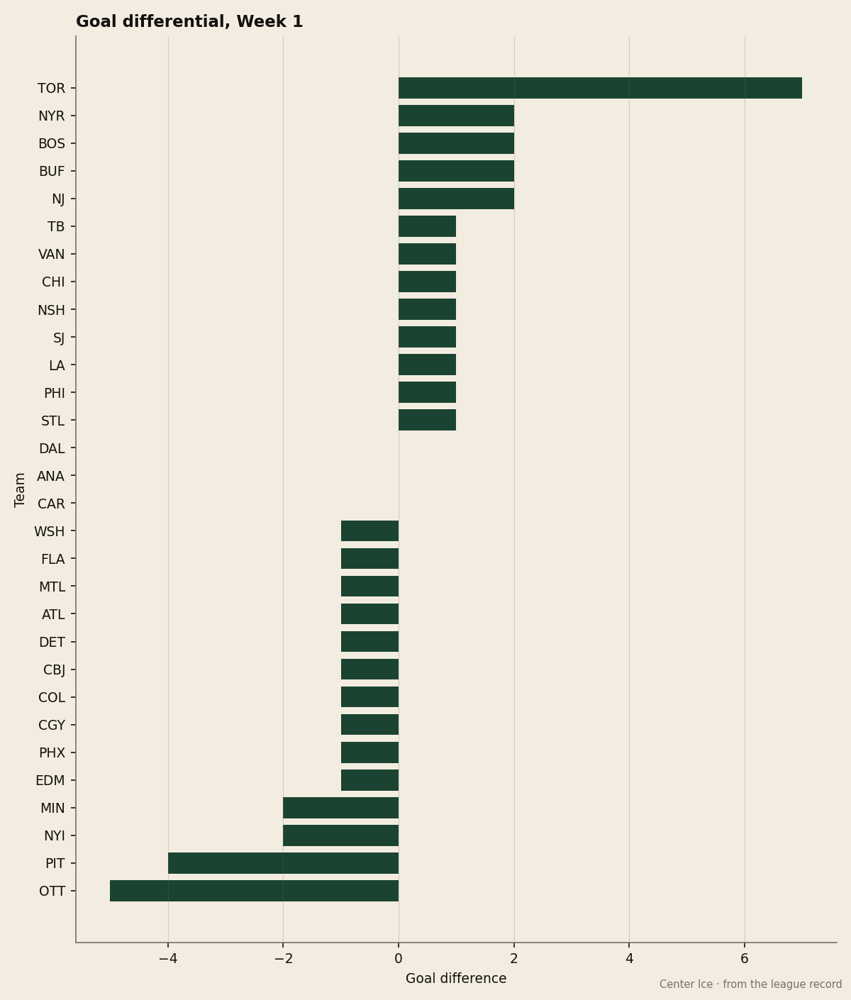
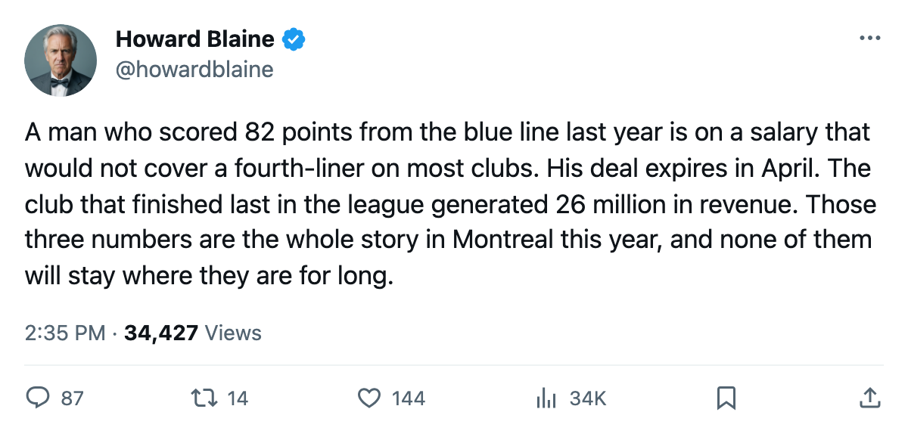
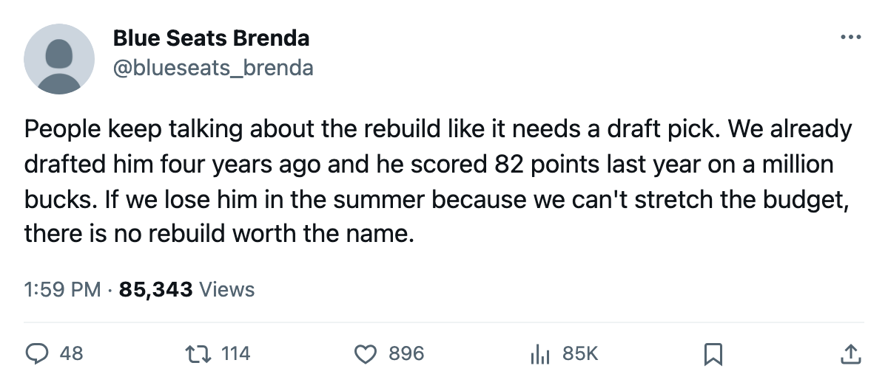

The $1.10M Defenseman With 82 Points, and the Clock That Runs Out in April
Mike Komisarek scored at a Norris-caliber pace last season on a salary lower than the league's 25th-cheapest club spends on a single skater, and his deal has 0 years left
 Howard BlaineSenior writer, The Blaine Rankings · The Hockey Gazette
Howard BlaineSenior writer, The Blaine Rankings · The Hockey Gazette
Mike Komisarek87 played 46.0 minutes in his first game of this season for  Montreal Canadiens on Thursday night, the highest ice time on the roster behind the goaltender, and the last time anyone in this league watched a defenseman eat that much of a game and produce 82 points from a $1.10M salary was the entire 2003-04 campaign. His contract has 0 years left. The clock runs out when the regular season ends on 2006-04-06, and after that he is a restricted free agent whose price, if his Development Index form holds, will not come down.
Montreal Canadiens on Thursday night, the highest ice time on the roster behind the goaltender, and the last time anyone in this league watched a defenseman eat that much of a game and produce 82 points from a $1.10M salary was the entire 2003-04 campaign. His contract has 0 years left. The clock runs out when the regular season ends on 2006-04-06, and after that he is a restricted free agent whose price, if his Development Index form holds, will not come down.
The standings say Montreal Canadiens sits at 0-0-1 after 1 game, 2 goals for, 3 against, 9th in the East conference table at 1 point. Last spring: 21 wins, 46 losses, 66 points, dead last in the league. The payroll is $54.89M, mid-range for 30 clubs. The revenue is $26M, tied for the bottom. The profit, $17.76M, is thin because the costs are high and the income is not. What the club built around that money, last year, was a 23-year-old defenseman who went from 3 points in 24 games as a rookie to 15 goals and 67 assists in 82 games the following season.

The desk has his path: 2 seasons at the University of Michigan, 46 points and 145 penalty minutes in 80 college games, a CCHA title, a First Team Division I All-American selection in 2002, and a 7th-overall pick in the 2001 draft for a club that signed him on July 24, 2002. He played 24 games in 2002-03 as a rookie and 82 the next year. The Development Index has him at +10 over his base grade of 77, putting his current overall at 82. His potential on the Book is 92. The speed grade, at 95, sits above every forward in the under-23 column.
| Season | GP | G | A | Pts | PIM | MPG |
|---|---|---|---|---|---|---|
| 2002-03 (rookie) | 24 | 1 | 2 | 3 | 6 | 11.8 |
| 2003-04 | 82 | 15 | 67 | 82 | 40 | 30.4 |
| 2005-06 (1 game) | 1 | 0 | 0 | 0 | 0 | 46.0 |
The ice time tells you what the club wants from him. In 2003-04 he averaged 30.4 minutes a night and 2,496 minutes across the season. This year, after 1 game, the coach sat him 46.0 minutes in a 3-2 overtime loss on the road. Whether the plan comes with a salary the club can pay remains to be seen.
The coach, Stefaan Bullard, told The Tunnel's Marcus Bell this week that the 21-win season was something he built facilities to fix, starting with the strength room. "Because I lost games in February. I lost games where we were the team that got run over in the third period. And the workout room, that's where you build the strength, the checking, the endurance." The strength room is a performance fix and a financial one. When a 23-year-old on $1.10M plays 46 minutes a night and scores 82 points, the next contract conversation is the biggest spending decision this club makes outside of goaltending, and the revenue line says how much room there is.
The comparison the desk keeps is against his own salary. A man whose speed, shot power and acceleration grades (95, 93, 90) put him above most top-pairing defensemen in the league, whose penalty minutes dropped from 6 in 24 games to 40 in 82, whose 67 assists were the second-highest on the roster behind only  Michael Nylander83 at 60 in 66 games, is priced at 2% of what Montreal Canadiens spends across the whole roster. That number cannot survive a full season at this pace. If Komisarek finishes 2005-06 at 30.4 minutes or better with another top-10 defenseman point season, the negotiation in July will ask whether a club generating $26M in revenue can offer the market rate for a 92-potential blueliner or whether he goes somewhere else at a number this room cannot match.
Michael Nylander83 at 60 in 66 games, is priced at 2% of what Montreal Canadiens spends across the whole roster. That number cannot survive a full season at this pace. If Komisarek finishes 2005-06 at 30.4 minutes or better with another top-10 defenseman point season, the negotiation in July will ask whether a club generating $26M in revenue can offer the market rate for a 92-potential blueliner or whether he goes somewhere else at a number this room cannot match.
The travel line the coach mentioned, and the penalty he said the club takes on every road trip, is the same building. Montreal Canadiens went 0-1 on the road this year and finished last year with a record the strength room was supposed to repair. If the fix works and the minutes and points hold, the club faces a choice at the end of a season it has no realistic hope of winning: pay a young defenseman what the market says he costs, on a revenue line that sits near the bottom of the league, or watch the best player it developed since the 2001 draft leave as a free agent on a contract the organization signed with a 7th-overall pick four years ago.
The season is 1 game old and the standings measure almost nothing at this point. But the contract is a fact, the 82 points are a fact, and the clock that starts the next negotiation runs to 2006-04-06 with no trade deadline until 157 days from now and no club in this league that will not look at his sheet and ask the same question the coach does about February.

